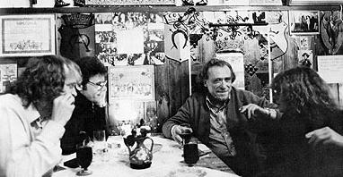

Thanks
Special Thanks To the following:
Black Sparrow Press
Michele Filshie (Black Sparow Press)
Terry Jones, for assisstance with scanning and stamp development
Russell T. Harrison, The Letters of Charles Bukowski, sure, 8/9; 1993 (a resource I used for development of the Henry Chinaski page.
Ed Smith, editor of sure, and an exceptionally generous, helpful person.
Levi Asher "webmaster"
David Barker, for the excerpt for the sure, page.
Special thanks to The Wino Xing page at The Picture Palace, for information involving the bibliography.
Special thanks to Robert Sandarg who wrote The Classical Buk an article in sure, no. 3., extremely helpful in developing the music link
Mike
Watt for assisstance with the Pedro Link
Back to main Bukowski Page
Literary Kicks
Charles Bukowski Pages by
michael mccullough = michael@magick.net